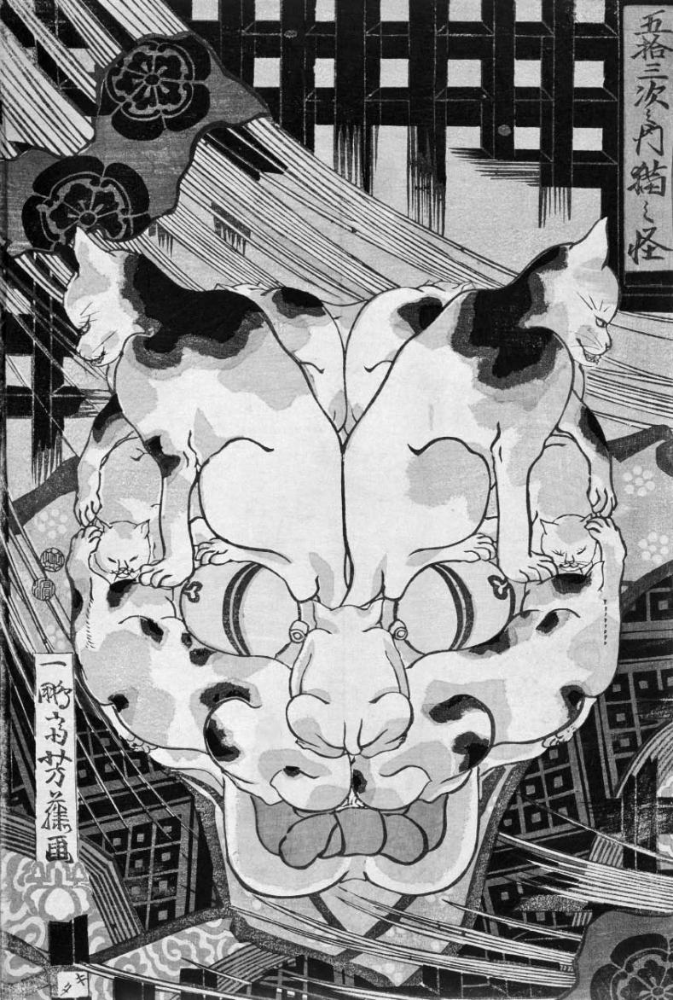

Hoşgörü, doğruluk ve
güven sorunları
2005 yılında, Papalık seçiminin arifesinde, –seçimi kazandıktan sonra Papa XVI. Benediktus adını alacak olan– Kardinal Ratzinger verdiği vaazda karşısına yoksulluğu, yoksunluğu, savaşı, tamahkârlığı değil, insanların “Her şey nasıl baktığına bağlı,” “Senin için doğruysa, doğrudur,” ya da günümüzün gençliğinin jargonuyla, “Ne olursa gider” sözleriyle seslendirdikleri “görecilik” denilen tavrı almıştır. Açık söylemek gerekirse, görecilik hakikat diye bir şeyin olmadığı görüşüdür.
Sadece senin doğrun, benim doğrum, onların doğrusu vardır. Bunlardan birini ayrıcalıklı kılma girişimi bir güç gösterisinden başka bir şey değildir. En kötüsü de başkalarını hor görme ve aşağılama iması taşıyan bu tavır “emperyalist” veya “sömürgeci” bir tavırdır.
Papa’nın Endişesi
Papa’nın hedef seçiminin akıllıca olduğundan emin değilim, çünkü göreciliğe karşı vaaz vermenin özel bir sorunu vardır. Göreci bu vaazı kendine göre anlar ve papanın otoritesi bile bunu engellemekte güçsüz kalır. Papa’nın işi bir otorite veya aslında tek otorite olduğunu iddia etmektir: Tanrı’nın yeryüzündeki sesi. Bu yüzden hakikati, nesnelliği, bilgiyi, akılsallığı ve kesinliği desteklemek ve “Ben Hakikat’i vazediyorum” demek zorundadır. Ama göreci omzunu silkerek, “Bu sadece onun doğrusu,” diyecektir: “O kendi davası için mücadele ediyor; o hakikat ufkumuzu kendi anlayışıyla kapatmaya çalışıyor. Ama bu onun görüşü, benim de kendi görüşüm var, senin de kendi görüşün. Ve aslında olanın hepsi de budur. Hiçbirimizin doğrusu diğerinkinden daha ayrıcalıklı değildir.”

BİR KEDİNİN BAŞINI OLUŞTURAN
KEDİLER (yak. 1810)
Japon Okulu (19uncu yüzyıl)
Papa’nın bu tutuma sinirlenmesi anlaşılır bir şey. Aynı tutum filozofların da başına dert olur; bu görüş, sadece bilim alanında değil, etik, estetik, tarih ve toplumbilim alanında da nesnel, makul, hatta doğru kanılara ulaşma gayretimizi anlamlı kılan gerçek standartların var olduğunu öne süren “muhafazakâr görüşü” savunan filozoflara karşılamaya çalışacakları bir meydan okuma sunar.
Korkulması gereken hasım bu alanlardaki yargılarımıza katılmayan insanlar değildir. Onlarla aynı dili konuşuruz. Ne hakkında konuşuyorsak onunla ilgili hususlara dikkat çekeriz. Bu hususların onları da etkilemesini bekleriz; onlar da bizi etkileyeceğini düşündükleri şeyleri öne sürerler. Bu birimiz diğerinin düşüncesini kabul edinceye veya bu konuda anlaşamadığımızda anlaşana veya birbirimize savaş açıncaya kadar devam eder.
Bizi tedirgin eden göreci hasım, kendisini bütün bu çekişmenin ötesinde gören kişidir. O zavallı ölümlülerin arasını bozan bu tartışmalara karşı bir tür Tanrı bakışına erişmiştir. İnsanların çabalarının ne için olduğunu, hayatta kalmaya uğraşan hayvanların nasıl evrim geçirdiğini, ayarları farklı olan aletlerin nasıl farklı şeyler gösterdiklerini ve iradeler çokluğunun nasıl birbiriyle çatıştığını görür. Hileleri, düzenbazlıkları, güç gösterilerini görür. Bu sahnenin oyuncularından biri çıkıp akıldan ve hakikatten bahsetmeye başladığında da göreci biraz cilalanmış da olsa yine aynı şeyi görür.
Felsefi Judo
Kinik veya kayıtsız karakter yeni değildir. Bunlar Platon’un birçok diyalogunda Sokrates’in baş hasmıdır. Platon bu Gorgiasların, Protagorasların ve Kallikleslerin sesini bastırmak için tüm akıl gücünü seferber etmiştir. Sonunda onlara karşı “peritrop” denilen klasik bir argüman geliştirmiştir. Bu argümanın amacı göreci tavrın kendiyle çelişik olduğunu göstermektir. Göreciden düşüncesini öne sürmesi istenir. Muhtemelen şöyle bir şey söyleyecektir: “Hakikat, güç oyununda bir hamleden, bir retorikten başka bir şey değildir. Bu yüzden, bütün kanaatler eşit derecede iyi veya doğrudur.” Platoncu bunu hemen yakalar ve sonucu ilan eder: “Sen tüm ahlaki kanaatlerin eşit derecede iyi olduğunu söylüyorsun. Ama benim kanaatime göre bunların bazıları diğerlerinden daha iyidir. Öyleyse, bu benim için doğrudur ve nihayetinde, senin kanaatin da senin için doğrudur, zira senin kendi ilkelerine göre sen kendi kanaatini mutlak doğru olarak öne süremezsin.”
<>
“Sen tüm ahlaki kanaatlerin eşit derecede iyi olduğunu
söylüyorsun. Ama benim kanaatime göre bunların
bazıları diğerlerinden daha iyidir...”
<>
Bu temiz bir tersine çevirme hamlesidir. Hasmın hamlesini kendisine döndüren bu karşı hamle birbirlerinden çok ayrı alanlarda çalışan birçok seçkin modern filozofa da uygulanmıştır. Bir örnek olarak Marksizmi ele alalım. Marx tüm değerlerin ideolojik olduğunu düşünür: Onlar tikel bir zamandaki tikel iktisadi güçlerin sonucudur ve onların tarihaşırı bir otoritesi yoktur. Ama Marx’ın kendisi de çeşitli değerleri savunur; örneğin komünist rejimde dünya kapitalist rejimde olduğundan daha adil ve eşit olacaktır. Bu noktada bir gerginlik vardır. Eğer bu görüşün kendisi de ideolojinin bir parçasıysa, o zaman Marx bunu nasıl ciddiye alabilir? Eğer bunun sadece 19. yüzyıl ortası kapitalizmi tarafından temsil edilen tikel bir sosyo-ekonomik andaki kendisinin de mensubu olduğu entelejensiya sınıfından beklenebilecek bir görüş olduğunun farkındaysa, bu davasını sulandırmaz ve nihayetinde de davasına karşı beslediği heyecanı yok etmez mi?
Şimdi sorunu daha açık olarak ifade edebiliriz: Göreci bir yere dayanmak zorundadır, ama ısrarla dayanacak bir yer olduğunu reddetmektedir. Bu sorun öğretiyi ne zaman kendisine uygulasak ortaya çıkar gibi görünmektedir. O halde göreci hem meşum iddianın –tüm kanılar eşit derecede iyidir– gerçekten, “mutlak doğru” olduğunu ileri sürmek hem de aynı zamanda bunun en fazla mütevazı bir doğru, yalnızca “ona göre doğru” olduğunu kabul etmek durumundadır. Öyleyse, kendisiyle çelişkiye düşmez mi?
Ben böyle düşünmüyorum. Görecinin öğretisini dünyayı görme biçiminden daha fazla bir şey olarak ortaya koymasına gerek yoktur. Onu “mutlak” doğru olarak sunma hevesini reddedebilir. Görüş açısının mağrur bir hakikat giysisiyle sarmalanmış olduğunu reddeder. Bazıları kendi tutumlarına böylesi vehimler atfeder. Bu kişiler bu giysiler olmadan bir fikir açıklamanın, bir tutum benimsemenin mümkün olamayacağını düşünürler; bu yüzden de göreciye şüpheyle yaklaşırlar. “Mutlakçı” hakikat ve akıl gibi yüce değerleri zorunlu giysiler olarak görür: Bu hükümdar kaftanları olmadan hiçbir faaliyette bulunamayız. Kendimizi Hakikat Âşıkları, İyiliğin Hizmetkârları olarak görmeliyiz; dolayısıyla da mutlak hakikat kaftanını üstümüze tam oturtmalıyız. Başkalarının hükümdarlık kaftanı gördüğü yerde göreci sadece maskeler görür. Bununla birlikte hükümdarlık kaftanını biraz küçümsüyor olsa da karnavala katılabilir. İddialarını dillendirebilir, hatta sizi bunlara ikna edebileceğini umabilir, ama bunlara, ona göre, asla taşıyamayacakları kıyafetler giydirmez. Öyleyse, ılımlı göreci felsefi judo hamlesini savuşturabilir.
Felsefede neredeyse bir kuraldır: Taraflar böylesine kolayca hizaya geldiğinde, paylaştıkları bir hata olup olmadığından kuşkulanmak gerekir. Burada açıkça görülen ortak etken doğruluk ve mahiyetinin ister maskeyle ister kaftanla olsun, bir şeyle örtülmesidir. Ama ya onlar elbisesizse? Daha az metaforik bir ifadeyle söylersek, ya doğruluk, hatta “mutlak hakikat” nosyonunda didişmeye yol açacak bir şey yoksa? Ya doğruluk (veya hakikat) bir savaşı taşıyabilecek kadar “yüce” bir kavram değilse?
Doğrunun Havasının Boşaltılması
Birçok çağdaş felsefeci bu görüştedir. Doğrunun teorik olarak “deflasyona” uğratılması (içeriğinin daraltılması) gerektiğini savunan bu düşünürlere “deflasyonistler” denir. Düşüncelerini bir örnekle açıklayalım. Diyelim ki, ben ineklerin mölediğine inanıyorum. Bunu size söylüyorum, siz de, “Evet, bu doğru,” diyorsunuz. Ama bunun yerine, “Evet, inekler möler” de diyebilirdiniz. Bu ikisi tamamıyla aynı anlama gelirdi. Deflasyonistlere göre doğruluk kavramını anlamanın anahtarı tam da bu anlam aynılığında yatmaktadır: “‘İnekler möler’ önermesi doğrudur” tümcesinin bilişsel içeriği “İnekler möler” tümcesinin bilişsel içeriğiyle aynıdır. Bunu genellersek: Herhangi bir P önermesi hakkında düşündüğümüzde, P’nin doğruluğuyla ilgili söylediklerimiz P ile ilgili söylediklerimizle aynıdır. “Doğru” yüklemi önermeye hiçbir ilave anlam katmaz. Deflasyonistler doğruluk kavramını anlamanın sırrının tam da onun hiçbir sırra sahip olmadığını anlamaktan geçtiğini düşünürler.
Peki, niçin bu anlayış tartışmada bir fark yaratır? Anafikir şudur: Muhafazakârlar ve göreciler arasındaki savaşın sürmesini sağlayan, aslında sadece “tek bir mesele”nin olduğu yerde “iki mesele” olduğuna inanmalarıdır. Bu savaşın çıkması için öncelikle sıradan bir “mesele” olmalıdır. Görecilik sıklıkla başını özellikle bir etik tartışma olduğunda gösterdiğinden “Ölüm cezasına yasal olarak izin verilmeli mi verilmemeli mi?” sorusu etrafında dönen etik meseleyi ele alalım. Görecilik hakkındaki tartışmaya katılanlar burada ikinci bir felsefi veya düşünümsel (ikinci-dereceden) bir mesele daha olduğunu düşünürler: Ölüm cezasına izin verilmesi meselesi bir “doğruluk meselesine” bağlanabilir mi? Muhafazakâr bulanık bir etik gerçeklik görüşüne savrulmak pahasına da olsa buna “Evet,” derken, bu bedeli ödemeye yanaşmayan göreci “Hayır,” der. Deflasyonist ise ikinci dereceden bir meselenin varlığını reddeder. Tek mesele ölüm cezasına izin verilip verilmemesi gerektiğidir, nokta. Olması gerekene karar verdikten sonra, “Ayrıca, bu doğrudur,” demek duruma bir şey eklemez. Bu sadece “Ölüm cezasına izin verilmelidir (ya da verilmemelidir)” sonucunu, yani başlangıçtaki ahlaki meseleye dair sonucu tekrarlamaktır. Sözde ikinci-dereceden mesele birinci (ahlaki) mesele içinde tüketilmiştir.
Görecilik tartışmasının iki tarafı da bazı bakımlardan doğru bazı bakımlardan yanlıştır. Mutlakçı ya da muhafazakâr, ölüm cezasına izin verilip verilmesi gerektiğine karar vermenin zahmetli bir iş olduğu konusunda haklıdır. Bu “intikam”, “caydırma”, “devlet iktidarı” gibi çetrefil konuların tartışılmasını gerektirir. Öyle kolayca verilebilecek bir hüküm değildir. Göreci kişinin bu tür bir mesele üzerindeki kararının geçmişindeki –örneğin takdir, iğrenme, utanç ve onur anlayışını belirleyen– birçok etkene bağlı olacağını söylerken haklıdır. Ama onların ikisi de doğruluk meselesiyle ilgili kaygılar üzerine odaklanmış ikinci dereceden bir düşünümün, ölüm cezasına izin verilip verilmemesi gerektiği hakkındaki karardan önce geldiği, ya da ona yardım ettiği, ya da onu engellediği türünden iddialarında haklı değildir. Bu konuda bir görüş oluşturmak için bakışınız ölüm cezası ve onun savunulabilir ya da savunulamaz bir şey olduğuna işaret eden karışık etkenler üzerinde olmalıdır. Bu konularda bir fikir geliştirdiğinizde belli bir tavır benimsersiniz. O zaman “Ölüm cezasına izin verilmemelidir” diyebilirsiniz. Ya da bununla aynı anlama gelecek şekilde, “Ölüm cezasına izin verilmemesi doğru olur,” ya da “Ölüm cezasına izin verilmemesi gerçekten doğru olur,” ya da “Ölüm cezasına izin verilmemesi iyi olur” ya da “Ölüm cezasına izin verilmemesi ebedi normatif düzene uygundur” diyebilirsiniz. Bunların hiçbiri başlangıçtaki tümcenizden daha fazla bir şey söylemez. Burada yükselen bir merdiven olduğunu düşünülebiliriz. Ama aslında bu merdiven yatay bir şekilde yerde durmaktadır. Sizi hiçbir yere götürmez.
Daha Fazla Bir Şey?
Benim tahminim bu noktada Papa’nın kendini aldatılmış hissettiğidir. Papa “Standartlara, gerçek standartlara ihtiyacımız var!” diye gürlemektedir, ama filozof ona istediğinin sadece çok soluk bir versiyonunu vermektedir. Papa, “Hakikatin, doğruluğun ve katı olguların tadını çıkartmak istiyorum” dediğinde deflasyonist filozof ona istediğini verdiğini söylemektedir, ama verdiği pek de umulan gibi değildir: “Görüşünüz ne olursa olsun onu ifade edebilirsiniz; canınız istiyorsa onu ‘doğrudur’ yüklemi ekleyerek de ifade edebilirsiniz. Hiç fark etmez.”
Daha fazlasını isteyen mutlakçılar ve muhafazakârlar deflasyonistin koltuğunu sarsmaya çalışırlar. Bu yönde bir hamle doğruluk fikrini bir norm veya araştırma ideali olarak muhafaza etmemiz gerektiğini öne sürmektir. Ama deflasyonist bu hamleyi bu fikirde değerli olan ne varsa zaten kendisinin koruduğunu söyleyerek karşılar. Bunun yolu da bir iddialar yığınını genelleyerek ifade etmekten geçer: Ancak ve ancak bahçede bir kedi varsa bahçede bir kedi olduğuna inanman gerekir. Ancak ve ancak her çift sayı iki asal sayının toplamıysa her çift sayının iki asal sayının toplamı olduğuna inanman gerekir. Bu tür iddialar doğruluk fikrine hiç gerek duymadan ifade edilebilir, ama isterseniz onların tüm yığınını doğru olduğunu söyleyerek özetleyebiliriz. Öyleyse deflasyonist doğruluğun bir genelleme aletinden başka bir şey olmadığını söyler. Buna karşılık muhafazakâr da doğruluk, özellikle de bilimdeki doğruluk için “mucize yokluğu” olarak bilinen argümanı kullanabilir: Eğer bilim bizi doğruya, ya da doğruya yakın bir şeye, ulaştırmasaydı, bu kadar başarılı olması mucize olurdu. Deflasyonist ise bunun bilimsel bir iddiaya, örneğin bir elektronun yükünün büyüklüğünün 1.602 x 10-19 coulomb olduğu iddiasına göre hareket etmenin başarısını açıklamak için gerekli olan şeyin elektronun yükünün büyüklüğünün gerçekten 1.602 x10-19 coulomb olması olduğunu söylemekten ibaret olduğunu söyler. Burada yine doğruluktan hiç bahsedilmez. Bu bilimin kendi başarısına dair kendi açıklamasıdır ve elimizde daha iyisi yoktur.
Eğer muhafazakâr daha başka bir şey istiyorsa, belki de bu istek bir kaygının ifadesi olmaktan ziyade teşhis ve tedavi edilmesi gereken bir şeyin ifadesidir. Belki, Papa Benediktus gibi, bir otorite özlemi içindedir. Bir yargıya varma sürecinin ağır yükünden kaçmak istemektedir. Dünyanın ona ne düşünmesi gerektiğini hiçbir hataya yer bırakmayacak şekilde bildirmesini istemektedir; dünyanın onu dinleyen herkese aynı şeyi söylemesini istemektedir. Hepimizin itaat edeceği bir Evren Kitabı istemektedir, hepimizin teslim olacağı bir ses istemektedir. Ama böyle bir ses yoktur ve olamaz. (Platon’un fark ettiği gibi bunun için Tanrı’nın sesi bile yetersizdir. Zira Tanrı bu tek Evren Kitabını seslendirmezse, onun sesi de keyfi olacaktır; sadece diğer politik baskı seslerinden biri olacaktır.) Gençler anne-babalarının ve öğretmenlerinin sesinin evrenin sesi olmadığını fark ettiklerinde göreci olmaktadır.
Muhafazakâr özlem tatmin edilemez. Ama bu göreci için bir zafer değildir. Görecinin bakışının bu çekişmelerin ötesine konumlanan bir Tanrı bakışı olduğunu hatırlayalım. Görecinin “Bu sadece senin kanaatin!” ünlemi ahlaki bir tartışmada bile yeni bir hamle olmaktan ziyade tartışmayı kapatan bir hamledir. Ama bazı tartışmalar kapatılamaz, zira bazı meselelerde farklı olduğumuzda, anlaşamadığımızda anlaşamayız. Farklı düşündüğümüzde anlaşmak çoğunlukla meselenin ahlaki bir mesele olmayıp bir beğeni ya da hayat tarzı meselesi olduğunu belirtme yoludur. Siz ölüm cezasının iyi bir şey olduğunu düşünürken ben buna hiçbir koşulda izin verilmemesi gerektiğini düşünüyorsam, bu konuda farklıyız demektir. Bu farklılıkları çözmek durumundayız. Bu bir beğeni ya da hayat tarzı meselesi değildir. Farklılıklarımızı uyumlu hale getirmeye çalışırken görecinin, “Bu sadece senin kanaatin!” ünlemesinin bize hiçbir faydası olmaz. Elbette kanaatlerimizi bildiriyoruz, zira eğer yalan söylemiyorsak ya da samimiyetsiz değilsek bir görüşü öne sürmek bundan başka nedir ki? Ama onları paylaşılmaları ya da reddedilmeleri gereken görüşler olarak öne sürüyoruz. Onları bir “kamusal alana”, bir söylemler ve nedenler mekânına taşıyoruz. Bu mekân içinde hayatta kalmaları Evren Kitabı’yla acil bir bağlantı hattına sahip olmaları meselesi değildir. Burada hayatta kalmaları ölüm cezasına izin verilip verilmemesi konusuyla (ya da konu her neyse onunla) ilgili söyledikleriyle ilgili bir meseledir. Tartıştığımız mesele önümüze koyulan meseledir, yoksa bu konunun doğası hakkındaki felsefi teori değil.
Deflasyonalizmin söylediklerini ciddiye almamıza rağmen, bazı şeylerin doğru olduğunu bazılarının olmadığını onaylamakta özellikle “emperyalist” ya da “sömürgeci” bir yan olmadığını da düşünebiliriz. Hiç kimse bir şeylere inanmadan ve onlarla çelişen başka şeyleri reddetmeden insana özgü bir yaşam yaşayamaz. Bu da bazı şeylerin doğru olduğunu bazılarının da olmadığını düşünmemiz için yeterli bir ruhsattır. Böyle şeylere inananlar sadece dar görüşlü sömürgeciler değildir.
Saygı
Biraz düşününce göreciliğin kendisini “farklılığa” en çok saygı gösteren ve başkalarına yönelik “emperyal” ve “sömürgeci” tutumlara karşı çıkan felsefe olarak sunmasını tuhaf bulabiliriz. Düşünce ufkunu açık tutma çabası, “hakikat evi”nde birçok odanın var olduğunu kabul etme niyeti onaylanacak özelliklerdir. Ama eğer bir kabilenin, bir halkın ya da kişinin rastgele söylediği her şeyin doğru olduğunu kabul edersek bunda özellikle saygıdeğer olan bir şey yoktur.
Göreciliğe yönelik kuşku ve karşıtlığın haklı bir nedeni var. Matematik, etik ya da estetik alanında bir şeyler hakkında dürüst ve samimi görüşümü seslendirdiğimi farz edin. Konuşmayı bitiren, “Bu sadece senin kanaatin!” saptamasının konuyla ilgisi olmamasının yanı sıra, belki de daha önemli olan bu sözlerin karşımızdakini insan yerine koymadığımızı ima etmesidir. Bu benim sözlerimin ciddiye alınmayı hak etmediğini, sadece bir semptom, bir hastalık belirtisi olarak görüldüğünü gösterir. Sözlerimi ciddiye almanız onları ya savınıza yardımcı ya da çürütmeniz gereken bir şey olarak görüp karar verme sürecinize dahil ettiğiniz anlamına gelir. Böylece benim sözlerim, diyelim, ölüm cezasına izin verilip verilmemesi hakkındaki fikrinizi geliştirirken dikkate aldığınız bir etken olur. Ama benim sözlerimi sadece kaypak liberal ya da haşin intikamcı muhafazakâr ideolojinin semptomları olarak görürseniz, konuyla ilgili söylediklerimi dışlarsınız. Bu da kelimenin tam anlamıyla münasebetsizliktir.
Geçen yüzyılın sonlarında sapına kadar dürüst bilimciler ile sözde put kırıcı “postmodernist” bilim tarihçileri ve sosyologları arasında şiddetli “bilim savaşları” oldu. Bir bilimci örneğin, ayın dünyadan çeyrek milyon mil kadar uzakta olduğunu mu söylüyor, onu dinleyen tarihçi ya da sosyologun öyküsü hazırdır: “Saptanabilir toplumsal ve tarihsel nedenlerin sonucu olan bir ideolojinin ya da perspektifin ifadesi olan bu söylem tüccar sınıfını veya sömürgeciliği desteklemek ya da kadınları aşağılamak için icat edilmiştir.” Bilimciye göre, bu onur kırıcıdır, zira onun bakış açısından esas mesele ayın dünyadan ne kadar uzak olduğudur; insanların buna nasıl ikna olduğuna dair tarihsel soru ise tali bir meseledir. Ona nasıl inanıldığına dair kendi tarih anlatısı bunun doğru olmasıyla başlar: “Buna inanılır, çünkü ayın dünyadan uzaklığı budur; bazı insanlar uzaklığı ölçülebilir terimlerle temsil etmenin yollarını bulabilecek ve sonunda da bunu anlayabilecek kadar akıllıdır.”
<>
Farklı düşündüğümüzde anlaşmak çoğunlukla
meselenin ahlaki bir mesele olmayıp bir beğeni ya da
hayat tarzı meselesi olduğunu belirtme yoludur.
<>
Bir kişinin buzdolabında peynir olduğuna neden inandığını açıklamaya çalıştığımı farz edin. İki tür açıklamaya gerek duyulabilir. Bunlardan ilki ancak ve ancak buzdolabında peynir ya da peynire benzeyen bir şey varsa orada peynir olduğuna inanan insanların durumu için verilen doğrudan açıklamadır: “Buzdolabına bakıp gördüler.” İkincisi ise orada peynir ya da kolaylıkla peynirle karıştırılabilecek bir şey olmadığı halde peynir olduğuna inanan kişilerin durumunda kullanılan dolaylı açıklamadır. Bu, hatanın nasıl izah edildiğine bağlı olarak az ya da çok kaygı uyandırıcı bir hal alabilir. Kişi kötü aydınlatmadan dolayı belli belirsiz görülen bir şeyi peynire benzetmiş olabilir ya da sanrı görüyor olabilir. Ama buzdolabında ne olduğu sorusunu peşinen bir kenara bırakıp ısrarla benim orada peynir olduğuna neden inandığımı açıklamaya çalışan beyaz yakalı adam, daha baştan bana hasta ya da potansiyel deli muamelesi yapıyordur. İşte bu da beni insan yerine koymadığının göstergesidir.
Muhafazakârların ve baş düşmanları görecilerin paylaştıkları ortak bir yanılsamadan söz ettim. Peki, bunun sonucu ne? Doğruluk artık “ucuz” bir kavram gibi görünüyor, zira deflasyonizm bize her yerde doğruluktan bahsetme imkânı sunuyor: Bilimde ya da matematikte olduğu kadar etikte ya da estetikte bile. Ama kavram ucuz olsa da birçok meselede doğruya ulaşmak kesinlikle kolay değil. Matematik ya da bilim gibi disiplinlerde anlaşmalar sağlanabiliyor. Bu alanlarda görüşlerin yakınlaşması diğer alanlara göre daha dikkat çekicidir. Sosyoloji ya da tarih gibi yoruma dayalı disiplinlerde ve sahneye büyük oranda değerlerin hükmettiği alanlarda, “kanaatlerin yakınsaklığı” yerine “kanaatlerin çeşitliliği” öne çıkıyor, ve bu durum, tıpkı klasik dönemde olduğu gibi, karamsarlığa ve şüpheciliğe yol açabiliyor.
Doğa bilimleri “yakınsaktır,” zira bu bilimlerin ilgilen diği atom ve proteinler gibi şeylerin doğalarının bilinmesi insan gibi son derece karışık varlıkların doğalarının bilinmesinden daha kolaydır. Seçkin doğa bilimciler bu yakınlaşmanın haklı olarak “bilgi” saydıkları bir şey sağladığını düşünürler. Bunun verdiği gururla da iktisat, toplum bilimleri, insan bilimleri ya da sanat alanındaki farklı sesleri hor görüp şu tavsiyede bulunurlar: “Ciddi olarak tarih, siyaset teorisi ya da etik yapmaktan vazgeçin.” Bu saygıdeğer bir bilimsel anlayışın parçası olamaz; olsa olsa kötü bir tavsiye olabilir. Bilimin –söz gelimi, nükleer fizik, kozmoloji ya da moleküler biyolojinin– ölüm cezasına izin verilip verilmemesi meselesinde kimseye yardımı olmaz.
Bu durumda hepimiz “yargı verme yükü” diyebileceğimiz zahmetli bir işle karşı karşıyayız. Tıpkı elektronun yükünün değerini tespit etmenin çalışma ve zekâ gerektirmesi gibi, ölüm cezasının gerekli olup olmadığı ya da bir yasayı ya da tarihsel bir belgeyi nasıl yorumlamamız gerektiği konusunda düşünmek de çalışma ve zekâ gerektirir. Bana göre bu izlenmesi gereken yol konusunda değerli ipuçları sunmaktadır. Bilim savaşlarının sıcaklığında, bilimi ve onun Batı’da doğuşunu açıklarken toplumsal ve tarihsel boyutları öne çıkaran ya da bilimsel faaliyetleri destekleyen toplumsal ve iktisadi yapılara vurgu yapan her girişimi, görecilik başlığı altında suçlama eğilimi yaygındı. Ama artık bu suçlamalar düştüğüne göre, bu açıklamaların kendi başlarına ne şüpheci ne maske düşürücü, hatta ne de bilimin şaşırtıcı başarılarına karşı saygısız olduğunu görebilmeliyiz. Öyleyse bu bölümü şu iki düşünceyi not ederek kapatalım:
Elektronlar gerçekten de Londra’da, Paris’te, Delhi’de ya da Ankara’da aynı yüke sahiptir.
Bunu bulmamızı sağlayan şey siyasi, toplumsal, ekonomik ve kültürel güçlerin şanslı bir çakışması olmuştur.
Bu iki saptama birbiriyle tamamıyla tutarlıdır ve her birinin kendine özgü önemi vardır. İkincisi bize bilginin ne kadar kırılgan olduğunu hatırlatır, zira yeni nesillerin geçmişin başarılarını anlamasının sağlanması için bile siyasi, toplumsal, ekonomik ve kültürel güçlerin benzer bir çakışması gerekir. O halde, o bize sadece bu başarıları artırmak için değil, ama sahip olduklarımızı korumak için bile akademisyenlerin payına ne ağır bir yük düştüğünü hatırlatır.